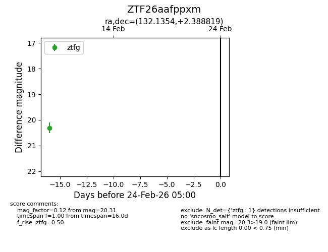
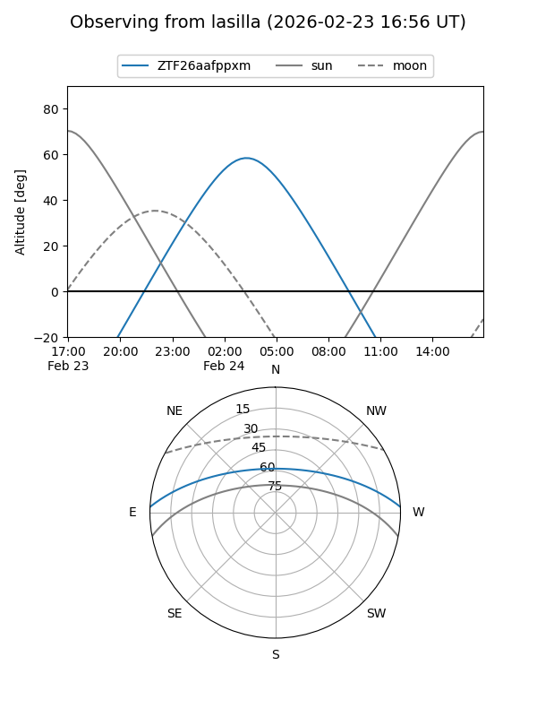
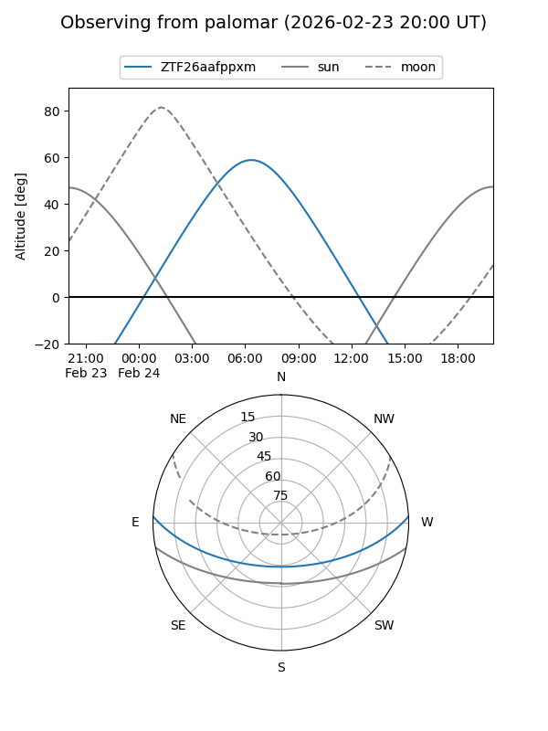

ZTF26aafppxm
Target ZTF26aafppxm at 2026-02-24 09:08
Aliases and brokers:
FINK: link
Lasair: link
ALeRCE: link
alt names
ZTF26aafppxm (ztf,fink_ztf)
Coordinates:
equatorial (ra, dec) = 132.1354,+2.38882
equatorial (HMS+DMS) = 08:48:32.50,+02:23:19.75
galactic (l, b) = (224.9601,+26.99070)
Flags:
Photometry:
last ztfg=20.31
1 ztfg detections
Lightcurve

Visibility


Additional plots